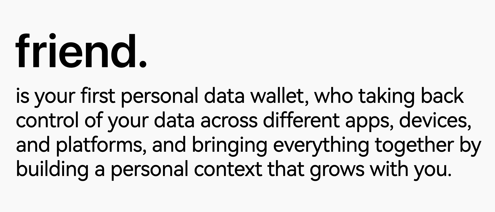
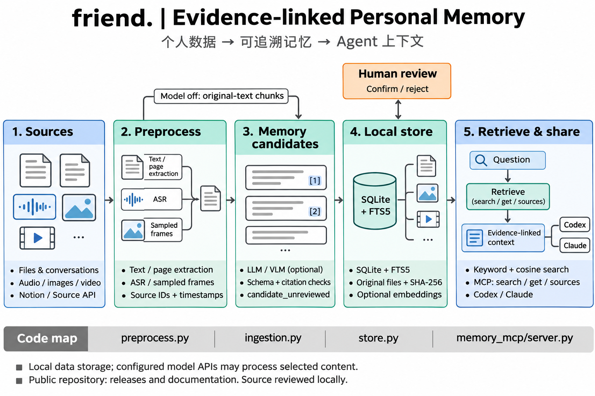

Personal AI & memory · 2026
friend. — Personal Data Wallet
One personal context that grows with you, across apps, devices and AI agents.

The idea
Personal context is scattered across apps, devices and platforms. friend. brings it together into a persistent memory that users can review and choose to share, helping AI agents provide relevant assistance without repeatedly asking for the same background.
Data, evidence & shared context
The local memory application organizes files, conversations and everyday records while preserving original material and evidence links. A WebUI supports review and search; MCP connects the memory to agents such as Codex and Claude. Phone recordings, Notion sync and an information-source API provide additional ways to bring context into the same system.
Published project
The project website introduces friend. and its approach to personal context. The public GitHub repository provides documentation and downloadable releases of friend. Memory for macOS on Apple Silicon, Windows and Linux.
Memories, files and evidence are stored on the user’s computer. Content used for model processing is sent to configured model endpoints or the friend. account model service.

